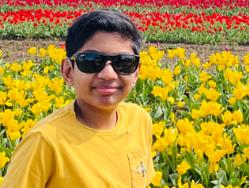

Resilient, hard-working, smart, respectful, and kind.
My name is Ryan Paul. I am born in Califorina.. I was hard of hearing when I was three years old. The doctors had no idea what was the problem. This also happen with my older brother. He is a nice person and he is pretty successful because he has over 3 million subs on youtube alone. He also happen to have more youtube channels where he is experimenting youtube. Right now, he is going to college and I hope he goes to berkeley college since it is close to Dublin. I also like UCLA but it is too far away from home. My mom is a teacher at John Green as a fifth grade teacher, and also do college together which is a lot for her. She wants to be a psychologist which means to help with people's behavior. My dad is a software engineer and he is a very hard working.
My goals: I want to do very well on my SAT, and finish high school with a good GPA. I hope to finish with a good gpa too. I also want to get in to a job which I like. I hoping to know what I want to do in the future because if I don't, I won't like a job that I am doing. I want to make a lot of money for my family to make them proud of me. I hope to start my own family when I grow up. So that I wont be alone working just for my parents and my brother.
In order to achive my goals, I would have to study hard and focus more in school. Hopefully to find a job where I like a lot. I would also need to make sure that my job pays well enough to please my family. If I want to make my family happy I would find ways to help with them work and cook food for them so they don't need to make their own.
